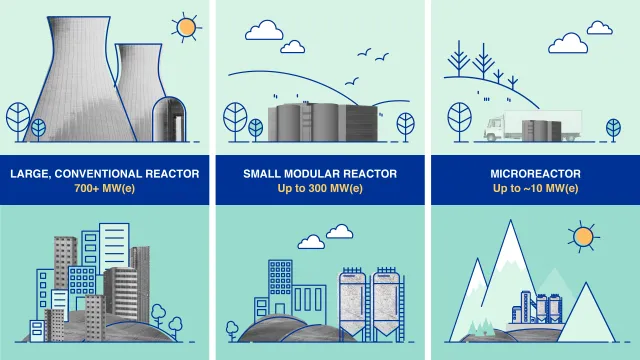

Bilde: Energy, Nuclear power plant, Grohnde image
Kilde: pixabay.com
URL: https://pixabay.com/photos/energy-nuclear-power-plant-grohnde-4030427
Halden, den lille grensebyen var en av få byer med atomreaktor til den ble stengt i 2018, reaktoren genererte ikke strøm men ga verdifulle data i bruk av forskning. Nå skal TikTok og Google og kanskje OpenAI ha datasentre i Norge, og da stilles spørsmålet hvordan blir energibehovet for Norge i framtiden? Hvordan vil dette påvirke strømpriser og vanlige forbrukere.
Halden kjernekraft har nå kjøpt tomt ved Femsjøen med planer om å bygge et kjernekraftverk for å produsere energi. Dette er i tråd med Haldens historie da det er en av få byer i Norge som har hatt atomreaktor, sammen med dataen de har fått fra IFE og den gamle reaktoren er det logisk.
I 2021 var det samlede elektrisitetsforbruket i Oslo, Akershus og Østfold beregnet til om lag 24 TWh, mens den samlede regionproduksjonen utgjorde omtrent 6 TWh. Dette innebærer at produksjonen i regionen var omtrent en fjerdedel av forbruket, og på de kaldeste vinterdagene kan forbruket ligge på omtrent det dobbelte av produksjonskapasiteten. Statnetts prognoser indikerer at Sør-Norge samlet kan gå inn i et kraftunderskudd innen 2028. Konsekvensene av et vedvarende underskudd vil kunne omfatte begrensede muligheter for etablering av ny industri, svekket forsyningssikkerhet og økt prisvolatilitet i kraftmarkedet.
Google planlegger etablering av et datasenter i Skien, et prosjekt som vurderes som attraktivt for lokale myndigheter på grunn av forventede investeringer og sysselsettingseffekter. Anslag tyder på at et stort datasenter kan kreve betydelige mengder elektrisitet. Enkelte estimater angir opp mot fem prosent av Norges totale strømforbruk, noe som langt overstiger lokal produksjon i Skien. Norges tilgang til fornybar vannkraft og ambisjon om karbonnøytral energiforsyning gjør landet strategisk interessant for store aktører som Google, som har mål om å operere på fornybar energi. Etableringen er i tråd med nasjonale strategier for datasenterlokalisering og digitalisering. Det forventes å generere et høyt antall arbeidsplasser i byggefasen, anslagsvis 2000. Samtidig et betydelig men langt lavere antall faste stillinger i driftsfasen, som vil ligge på omtrent 100 ansatte.
"Hvis det ikke bygges mer kraft vil datasentre sluke all tilgjengelig kraft i området" sier selv politiker Ådne Naper (SV)
Hvorfor ønsker Halden kommune å satse på et SMR-anlegg i stedet for et tradisjonelt kjernekraftverk?
Historiske alvorlige ulykker ved kjernekraftverk, for eksempel Tsjernobyl og Fukushima har ført til legitime bekymringer knyttet til sikkerhet og beredskap. I møte med disse bekymringene representerer Small Modular Reactors (SMR), en alternativ tilnærming som er gjenstand for både teknisk og regulatorisk oppmerksomhet. SMR betegner mindre modulære reaktorenheter med typiske effektstørrelser på opptil noen hundre megawatt per modul. Designenets modularitet påvirker både produksjons- og installasjonsprosesser.
Et sentralt teknologisk prinsipp for mange SMR-konsepter er prefabrikasjon i kontrollerte fabrikkmiljøer. Denne tilnærmingen har potensial til å redusere bygge- og monteringstid. Den skal forbedre kvalitetssikring, og redusere prosjektspesifikke risikofaktorer knyttet til byggeplassarbeid. Slike effekter kan gi bedre kostnadskontroll og høyere grad av standardisering sammenlignet med storskala, tradisjonelle anlegg.
Sikkerhetsarkitekturen i moderne SMR-design inkluderer ofte passive og inherent sikkerhetsegenskaper. Disse begrenser behovet for aktive tekniske inngrep og reduksjon i krav til nødstrøm og kompleks redundans. Passive systemer baserer seg på fysiske prinsipper, for å oppnå stabil nedkjøling og sikker nedstengning under avvikssituasjoner. Slike løsninger kan redusere sannsynligheten for enkelte typer menneskelige feil og systemsvikt. Dette krever fortsatt grundig verifikasjon gjennom både simulering og fullskala testing.
Når det gjelder radioaktivt avfall, genererer SMR-anlegg generelt mindre volum per modul enn større reaktorer. Noe som kan forenkle logistikk og korttidslagring. Likevel innebærer all kjernefysisk energiproduksjon behov for både mellomlagring og endelig sluttdisponering. Faglige anbefalinger vektlegger flerlagede barrierer og dypgeologisk sluttlager, som det mest robuste alternativet for langsiktig sikring av høyaktivt avfall. Det krever også krav om kontinuerlig tilsyn og overvåkning gjennom hele lagringsperioden.
Regulatorisk godkjenning, internasjonale standarder og grundige livssyklusanalyser er avgjørende for å vurdere de reelle sikkerhets og miljøfordelene ved SMR. Teknologiske fordeler må vurderes opp mot økonomiske realiteter, forsyningskjedeutfordringer og krav til kompetanse og beredskap i lokalsamfunnet. Avslutningsvis er SMR en teknologi med potensial for forbedret byggeprosess og enkelte sikkerhetsfordeler, men implementering fordrer streng teknisk dokumentasjon. Uavhengig regulering og åpen dialog om usikkerheter knyttet til økonomi, avfallshåndtering og samfunnsmessig aksept.
Figur over: Small Modular Reactors (SMRs) Kilde: International Atomic Energy Agency (IAEA), 2024 URL: https://www.iaea.org/newscenter/news/what-are-small-modular-reactors-smrs
Klikk for å se mer
SMR: Opp til 300 MW per generator
Tradisjonell: 1000-1600 MW
SMR er mer fleksibelt for mindre behov
Klikk for å se mer
SMR: 2-5 år
Tradisjonell: 10-15 år
Fabrikkproduksjon gjør SMR raskere
Klikk for å se mer
SMR: Lavere initial investering
Tradisjonell: Meget høy initial kostnad
SMR krever mindre kapital å starte
Klikk for å se mer
SMR: Passiv sikkerhet, automatisk nedstengning
Tradisjonell: Aktive sikkerhetssystemer
SMR krever mindre menneskelig inngrep
Klikk for å se mer
SMR: Kompakt, kan fraktes ferdig
Tradisjonell: Massive konstruksjoner på stedet
SMR tar mindre plass og er modulær
Klikk for å se mer
SMR: Mindre mengde, lettere å håndtere
Tradisjonell: Større volum radioaktivt avfall
Begge krever trygg lagring i hundrevis av år
Rapporten fra Halden Kjernekraft argumenterer for at det planlagte kjernekraftverket kan bidra til oppnåelse av flere av FNs bærekraftmål. Dette er særlig knyttet til pålitelig energi, industriell utvikling og økonomisk vekst. Slike påstander krever imidlertid støtte i uavhengige livssyklusanalyser og helhetlige vurderinger av miljø-, sikkerhets- og samfunnsmessige konsekvenser for å kunne dokumenteres faglig.
Dokumentasjonen peker på at anlegget kan gi stabil døgnkontinuerlig kraftproduksjon, som reduserer eksponering for vær og klimaavhengige produksjonsvariasjoner. Rapporten hevder videre at kjernekraft kan gi lave klimagassutslipp per energienhet. over hele livsløpet sammenlignet med fossile alternativer. Men understreker samtidig at dette avhenger av forutsetninger knyttet til bygging, drift, avfallshåndtering og dekommisjonering. Estimatet om om lag 400 arbeidsplasser bør tolkes med omtanke. Det skilles mellom midlertidige byggejobber og permanente driftsstillinger, samt krav til teknisk kompetanse og sikkerhetsorganisering. Til slutt fremheves relativt begrenset arealbruk. Men lokale økologiske og landskapsmessige konsekvenser må alltid vurderes, gjennom grundige konsekvensutredninger og uavhengige fagvurderinger før endelige konklusjoner kan trekkes.